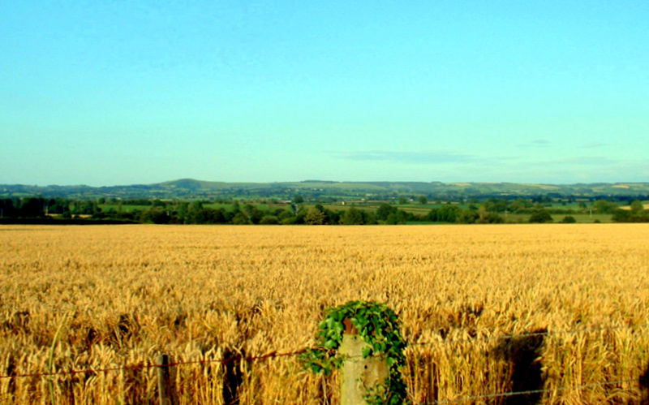

Arable Land
Overview: Arable land refers to land that is suitable for growing crops. It is vital for the production of food crops such as grains, vegetables, and fruits.
Importance: Arable land supports the foundation of agriculture by providing space for crop production, essential for feeding the global population. The sustainability of arable land is crucial for food security and the global economy.
Effective management and protection of arable land are vital to maintain its fertility and productivity over time, ensuring that it can support future generations of farming.
Conservation Methods:
- Adopt sustainable farming practices such as crop rotation and no-till farming.
- Prevent soil erosion using cover crops and contour farming.
- Implement efficient irrigation systems to optimize water usage.
- Minimize the use of chemical fertilizers and pesticides to protect soil health.
- Encourage agroecological practices to maintain soil fertility and biodiversity.